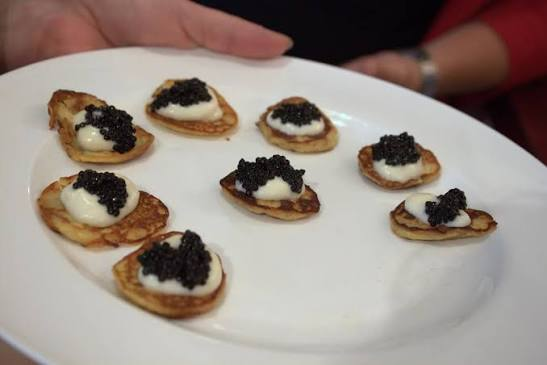

Blini

The best blini in the world!
Today we're going to make the best blini in the world! Make sure
to give your family a taste!
Ingredients:
- 1 cup all-purpose flour
- 1 cup milk
- 1 large egg
- 1 tbsp sugar
- 1/2 tsp salt
- 2 tbsp melted butter
Steps:
- In a large bowl, whisk together the flour, milk, egg, sugar, and salt.
- Stir in the melted butter until well combined.
- Heat a non-stick pan over medium heat and grease with butter.
- Pour about 1/4 cup of batter into the pan, swirling to coat the bottom.
- Cook for 1-2 minutes until bubbles form on the surface, then flip and cook for another 1-2 minutes until golden brown.
- Repeat with the remaining batter.
Back to Home